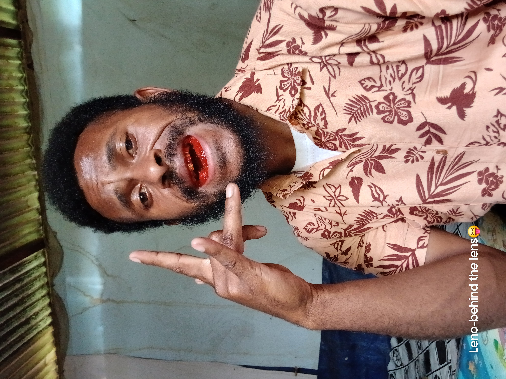

Welcome to my personal website! Exploring life, appreciating nature, and building my future.
Discover My StoryThis is my personal space to share my interests, creativity, photographs, and music while I learn and grow.
Beautiful moments and memories from my journey.

Relax, listen, and enjoy my music collection.
Connect With Me 🌐
Follow me and stay connected!